Geometry — Spatial reasoning
Proof, area, similarity and trigonometry. This guide contains 67 chapter-level worked lessons, review questions, answers, and linked illustrations.
Contents — select a chapter
Triangle angle sum
Interior angles of a Euclidean triangle sum to 180°.
Angles 50° and 60° leave 70°.
- Angle sum equals 180°
- Subtract 50° and 60°
- Remaining angle is 70°.
Find third angle if first two are 35 and 85.
Hint: Subtract sum from 180.
Show answer and verify
60
Check the units, inputs and intermediate steps. Different solution methods may be valid.
Parallel lines
Corresponding angles are equal and same-side interior angles supplementary.
A 115° angle has adjacent linear-pair angle 65°.
- A straight line totals 180°
- 180−115=65.
An angle is 123°. Find its supplementary angle.
Hint: Subtract from 180.
Show answer and verify
57
Check the units, inputs and intermediate steps. Different solution methods may be valid.
Area of triangles
Triangle area A=1/2·base·height.
Base 10, height 6 gives A=30.
- 10×6=60
- Divide by two.
A triangle base 12, height 9. Area?
Hint: Half the base-height product.
Show answer and verify
54
Check the units, inputs and intermediate steps. Different solution methods may be valid.
Similarity and proportionality
Similar polygons preserve angles and side ratios.
Sides 3 and 6 have scale factor 2.
- Divide new by old
- Multiply related sides.
A similar triangle side 8 becomes 20. What is the new length of side 6?
Hint: Scale 20/8.
Show answer and verify
15
Check the units, inputs and intermediate steps. Different solution methods may be valid.
Right triangle trigonometry
sin=opposite/hypotenuse, cos=adjacent/hypotenuse, tan=opposite/adjacent.
In 3–4–5 triangle sin of angle opposite 3 =3/5.
- Identify opposite 3 and hypotenuse 5
- Ratio 0.6.
For right triangle opposite 5, adjacent 12, find tan(theta).
Hint: Opposite divided by adjacent.
Show answer and verify
0.4166666666666667
Check the units, inputs and intermediate steps. Different solution methods may be valid.
Circle sectors
Sector area = (θ/360°)πr² for θ in degrees.
90° sector radius 4 has area 4π.
- Quarter-circle
- π16/4=4π.
Area of 180° sector of radius 2 divided by π?
Hint: Half of πr².
Show answer and verify
2
Check the units, inputs and intermediate steps. Different solution methods may be valid.
Distance formula
Between (x1,y1) and (x2,y2): d=√((Δx)²+(Δy)²).
From (0,0) to (6,8) distance=10.
- 6²+8²=100
- Square root is 10.
Distance (1,2) to (4,6)?
Hint: Horizontal 3, vertical 4.
Show answer and verify
5
Check the units, inputs and intermediate steps. Different solution methods may be valid.
Volume of cylinder
Volume V=πr²h.
Radius 3 height 4 gives 36π.
- Base area 9π
- Multiply by height four.
For r=2,h=5, find volume divided by π.
Hint: Use r²h.
Show answer and verify
20
Check the units, inputs and intermediate steps. Different solution methods may be valid.
Proof by congruence
SSS, SAS, ASA, AAS and HL (right triangles) can establish congruence.
If three corresponding sides match, SSS applies.
- List side equalities
- Invoke SSS
- Corresponding parts match.
Two triangles have sides 3,4,5 and 3,4,5. How many pairs of corresponding equal sides?
Hint: SSS involves three pairs.
Show answer and verify
3
Check the units, inputs and intermediate steps. Different solution methods may be valid.
Trapezoid area
A=(b1+b2)h/2 for parallel bases b1 and b2.
Bases 8,12, height 5 => area 50.
- Average bases (8+12)/2=10
- Multiply height 5.
Bases 6 and 10, height 4. Area?
Hint: Average bases times height.
Show answer and verify
32
Check the units, inputs and intermediate steps. Different solution methods may be valid.
Postulates and deductive reasoning
Postulates and deductive reasoning: Sketch and label known lengths, angles and shape properties before calculating. A valid geometric argument uses definitions and established properties.
A triangle has two angles 21° and 40°.
- Triangle interior angles total 180°.
- Add the known angles: 61°.
- Third angle is 119°.
A triangle has angles 14° and 30°. Find the third.
Hint: Interior triangle angles sum to 180 degrees.
Show answer and verify
136
Check the units, inputs and intermediate steps. Different solution methods may be valid.
Points lines planes and rays
Points lines planes and rays: Sketch and label known lengths, angles and shape properties before calculating. A valid geometric argument uses definitions and established properties.
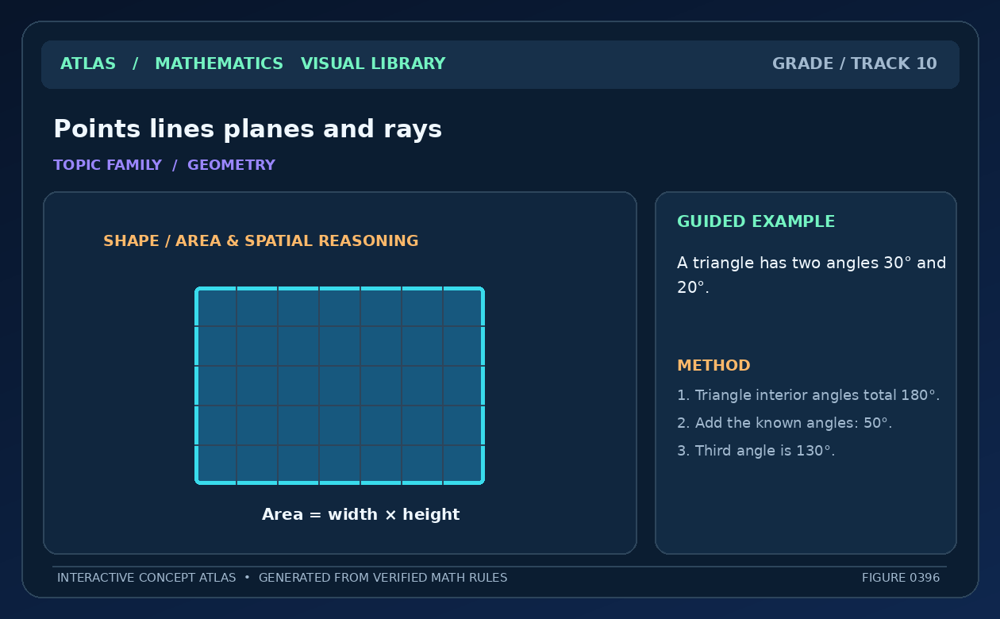
A triangle has two angles 30° and 20°.
- Triangle interior angles total 180°.
- Add the known angles: 50°.
- Third angle is 130°.
A triangle has angles 20° and 15°. Find the third.
Hint: Interior triangle angles sum to 180 degrees.
Show answer and verify
145
Check the units, inputs and intermediate steps. Different solution methods may be valid.
Segment addition and midpoint
Segment addition and midpoint: Sketch and label known lengths, angles and shape properties before calculating. A valid geometric argument uses definitions and established properties.
A triangle has two angles 27° and 20°.
- Triangle interior angles total 180°.
- Add the known angles: 47°.
- Third angle is 133°.
A triangle has angles 18° and 15°. Find the third.
Hint: Interior triangle angles sum to 180 degrees.
Show answer and verify
147
Check the units, inputs and intermediate steps. Different solution methods may be valid.
Angle bisectors
Angle bisectors: Sketch and label known lengths, angles and shape properties before calculating. A valid geometric argument uses definitions and established properties.
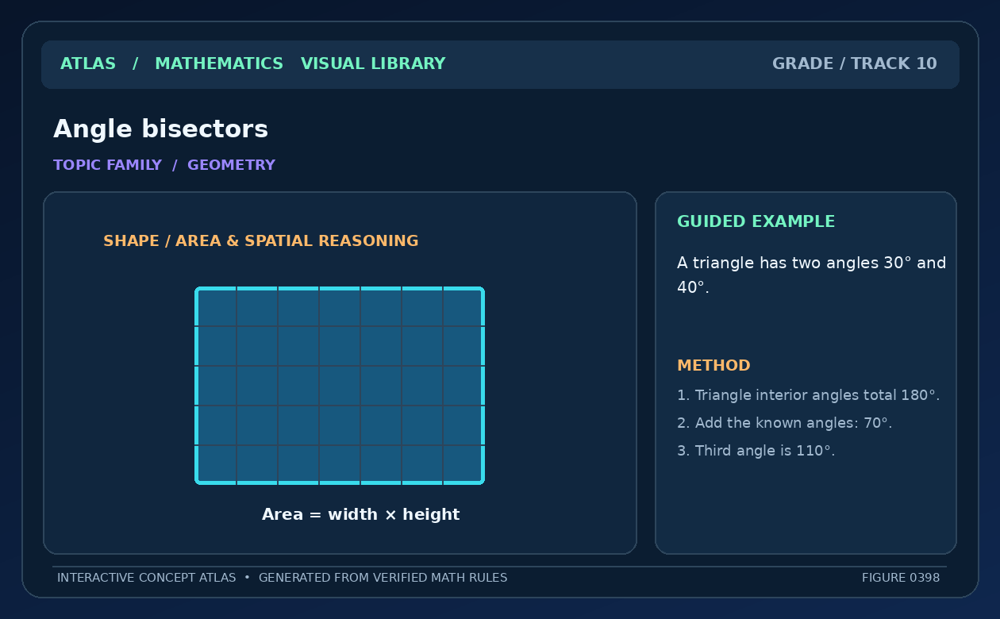
A triangle has two angles 30° and 40°.
- Triangle interior angles total 180°.
- Add the known angles: 70°.
- Third angle is 110°.
A triangle has angles 20° and 30°. Find the third.
Hint: Interior triangle angles sum to 180 degrees.
Show answer and verify
130
Check the units, inputs and intermediate steps. Different solution methods may be valid.
Vertical and adjacent angles
Vertical and adjacent angles: Sketch and label known lengths, angles and shape properties before calculating. A valid geometric argument uses definitions and established properties.
A triangle has two angles 15° and 28°.
- Triangle interior angles total 180°.
- Add the known angles: 43°.
- Third angle is 137°.
A triangle has angles 10° and 21°. Find the third.
Hint: Interior triangle angles sum to 180 degrees.
Show answer and verify
149
Check the units, inputs and intermediate steps. Different solution methods may be valid.
Parallel lines and transversals
Parallel lines and transversals: Sketch and label known lengths, angles and shape properties before calculating. A valid geometric argument uses definitions and established properties.
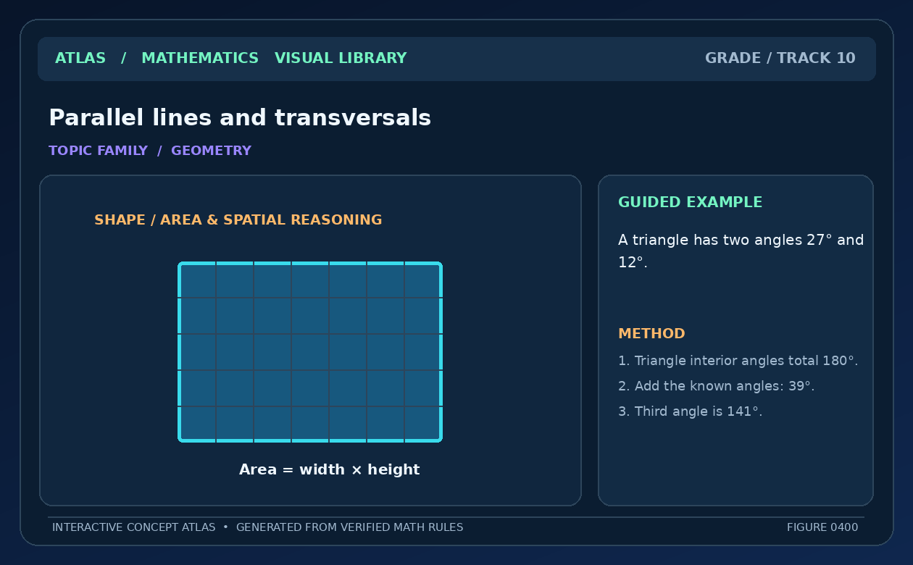
A triangle has two angles 27° and 12°.
- Triangle interior angles total 180°.
- Add the known angles: 39°.
- Third angle is 141°.
A triangle has angles 18° and 9°. Find the third.
Hint: Interior triangle angles sum to 180 degrees.
Show answer and verify
153
Check the units, inputs and intermediate steps. Different solution methods may be valid.
Triangle angle-sum theorem
Triangle angle-sum theorem: Sketch and label known lengths, angles and shape properties before calculating. A valid geometric argument uses definitions and established properties.
A triangle has two angles 15° and 12°.
- Triangle interior angles total 180°.
- Add the known angles: 27°.
- Third angle is 153°.
A triangle has angles 10° and 9°. Find the third.
Hint: Interior triangle angles sum to 180 degrees.
Show answer and verify
161
Check the units, inputs and intermediate steps. Different solution methods may be valid.
Exterior triangle angles
Exterior triangle angles: Sketch and label known lengths, angles and shape properties before calculating. A valid geometric argument uses definitions and established properties.
A triangle has two angles 33° and 20°.
- Triangle interior angles total 180°.
- Add the known angles: 53°.
- Third angle is 127°.
A triangle has angles 22° and 15°. Find the third.
Hint: Interior triangle angles sum to 180 degrees.
Show answer and verify
143
Check the units, inputs and intermediate steps. Different solution methods may be valid.
Isosceles triangle properties
Isosceles triangle properties: Sketch and label known lengths, angles and shape properties before calculating. A valid geometric argument uses definitions and established properties.
A triangle has two angles 12° and 40°.
- Triangle interior angles total 180°.
- Add the known angles: 52°.
- Third angle is 128°.
A triangle has angles 8° and 30°. Find the third.
Hint: Interior triangle angles sum to 180 degrees.
Show answer and verify
142
Check the units, inputs and intermediate steps. Different solution methods may be valid.
Triangles by side length
Triangles by side length: Sketch and label known lengths, angles and shape properties before calculating. A valid geometric argument uses definitions and established properties.
A triangle has two angles 24° and 40°.
- Triangle interior angles total 180°.
- Add the known angles: 64°.
- Third angle is 116°.
A triangle has angles 16° and 30°. Find the third.
Hint: Interior triangle angles sum to 180 degrees.
Show answer and verify
134
Check the units, inputs and intermediate steps. Different solution methods may be valid.
Triangles by angle type
Triangles by angle type: Sketch and label known lengths, angles and shape properties before calculating. A valid geometric argument uses definitions and established properties.
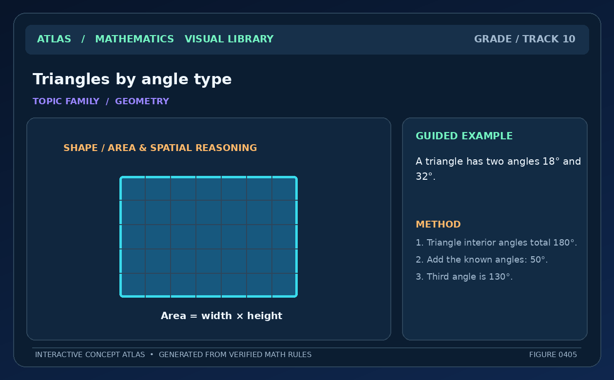
A triangle has two angles 18° and 32°.
- Triangle interior angles total 180°.
- Add the known angles: 50°.
- Third angle is 130°.
A triangle has angles 12° and 24°. Find the third.
Hint: Interior triangle angles sum to 180 degrees.
Show answer and verify
144
Check the units, inputs and intermediate steps. Different solution methods may be valid.
Congruence by SSS
Congruence by SSS: Sketch and label known lengths, angles and shape properties before calculating. A valid geometric argument uses definitions and established properties.
A triangle has two angles 24° and 12°.
- Triangle interior angles total 180°.
- Add the known angles: 36°.
- Third angle is 144°.
A triangle has angles 16° and 9°. Find the third.
Hint: Interior triangle angles sum to 180 degrees.
Show answer and verify
155
Check the units, inputs and intermediate steps. Different solution methods may be valid.
Congruence by SAS
Congruence by SAS: Sketch and label known lengths, angles and shape properties before calculating. A valid geometric argument uses definitions and established properties.
A triangle has two angles 33° and 20°.
- Triangle interior angles total 180°.
- Add the known angles: 53°.
- Third angle is 127°.
A triangle has angles 22° and 15°. Find the third.
Hint: Interior triangle angles sum to 180 degrees.
Show answer and verify
143
Check the units, inputs and intermediate steps. Different solution methods may be valid.
Congruence by ASA
Congruence by ASA: Sketch and label known lengths, angles and shape properties before calculating. A valid geometric argument uses definitions and established properties.
A triangle has two angles 24° and 28°.
- Triangle interior angles total 180°.
- Add the known angles: 52°.
- Third angle is 128°.
A triangle has angles 16° and 21°. Find the third.
Hint: Interior triangle angles sum to 180 degrees.
Show answer and verify
143
Check the units, inputs and intermediate steps. Different solution methods may be valid.
Congruence by AAS
Congruence by AAS: Sketch and label known lengths, angles and shape properties before calculating. A valid geometric argument uses definitions and established properties.
A triangle has two angles 24° and 44°.
- Triangle interior angles total 180°.
- Add the known angles: 68°.
- Third angle is 112°.
A triangle has angles 16° and 33°. Find the third.
Hint: Interior triangle angles sum to 180 degrees.
Show answer and verify
131
Check the units, inputs and intermediate steps. Different solution methods may be valid.
Right-triangle HL congruence
Right-triangle HL congruence: Sketch and label known lengths, angles and shape properties before calculating. A valid geometric argument uses definitions and established properties.
A triangle has two angles 21° and 20°.
- Triangle interior angles total 180°.
- Add the known angles: 41°.
- Third angle is 139°.
A triangle has angles 14° and 15°. Find the third.
Hint: Interior triangle angles sum to 180 degrees.
Show answer and verify
151
Check the units, inputs and intermediate steps. Different solution methods may be valid.
Proving triangle relationships
Proving triangle relationships: Sketch and label known lengths, angles and shape properties before calculating. A valid geometric argument uses definitions and established properties.
A triangle has two angles 15° and 40°.
- Triangle interior angles total 180°.
- Add the known angles: 55°.
- Third angle is 125°.
A triangle has angles 10° and 30°. Find the third.
Hint: Interior triangle angles sum to 180 degrees.
Show answer and verify
140
Check the units, inputs and intermediate steps. Different solution methods may be valid.
Similar triangles by AA
Similar triangles by AA: Sketch and label known lengths, angles and shape properties before calculating. A valid geometric argument uses definitions and established properties.
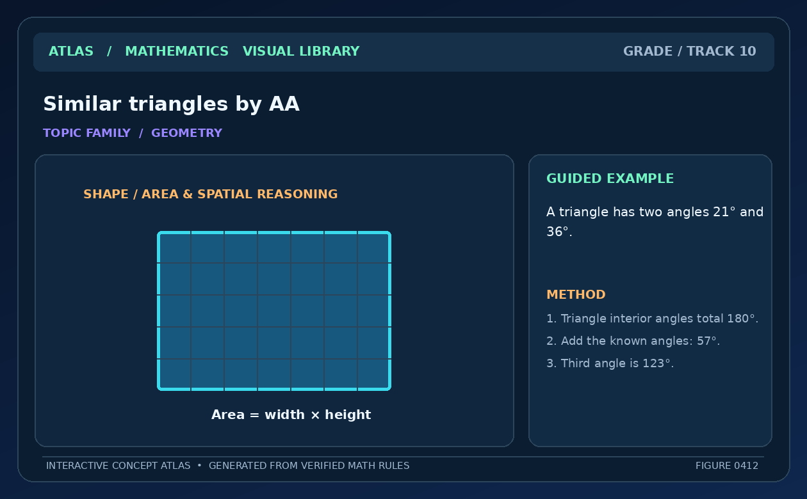
A triangle has two angles 21° and 36°.
- Triangle interior angles total 180°.
- Add the known angles: 57°.
- Third angle is 123°.
A triangle has angles 14° and 27°. Find the third.
Hint: Interior triangle angles sum to 180 degrees.
Show answer and verify
139
Check the units, inputs and intermediate steps. Different solution methods may be valid.
Similar triangles by SAS
Similar triangles by SAS: Sketch and label known lengths, angles and shape properties before calculating. A valid geometric argument uses definitions and established properties.
A triangle has two angles 12° and 20°.
- Triangle interior angles total 180°.
- Add the known angles: 32°.
- Third angle is 148°.
A triangle has angles 8° and 15°. Find the third.
Hint: Interior triangle angles sum to 180 degrees.
Show answer and verify
157
Check the units, inputs and intermediate steps. Different solution methods may be valid.
Similar triangles by SSS
Similar triangles by SSS: Sketch and label known lengths, angles and shape properties before calculating. A valid geometric argument uses definitions and established properties.
A triangle has two angles 27° and 8°.
- Triangle interior angles total 180°.
- Add the known angles: 35°.
- Third angle is 145°.
A triangle has angles 18° and 6°. Find the third.
Hint: Interior triangle angles sum to 180 degrees.
Show answer and verify
156
Check the units, inputs and intermediate steps. Different solution methods may be valid.
Triangle proportionality theorem
Triangle proportionality theorem: Sketch and label known lengths, angles and shape properties before calculating. A valid geometric argument uses definitions and established properties.
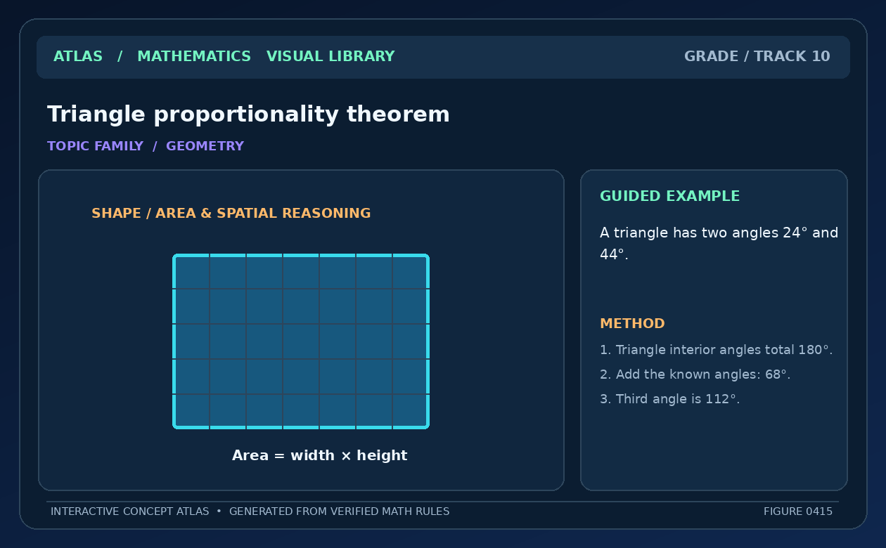
A triangle has two angles 24° and 44°.
- Triangle interior angles total 180°.
- Add the known angles: 68°.
- Third angle is 112°.
A triangle has angles 16° and 33°. Find the third.
Hint: Interior triangle angles sum to 180 degrees.
Show answer and verify
131
Check the units, inputs and intermediate steps. Different solution methods may be valid.
Medians altitudes and angle bisectors
Medians altitudes and angle bisectors: Sketch and label known lengths, angles and shape properties before calculating. A valid geometric argument uses definitions and established properties.
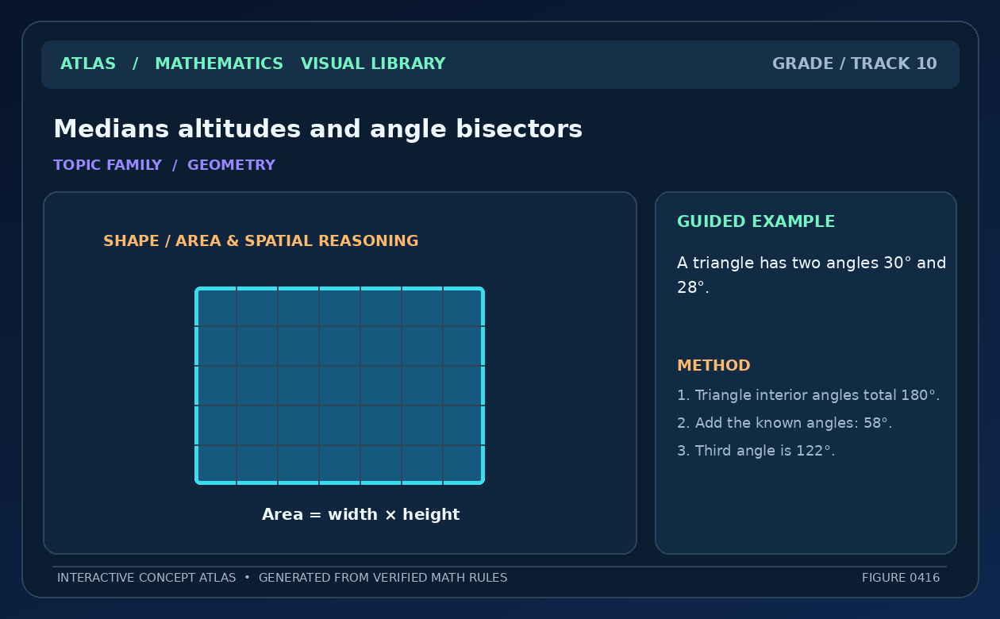
A triangle has two angles 30° and 28°.
- Triangle interior angles total 180°.
- Add the known angles: 58°.
- Third angle is 122°.
A triangle has angles 20° and 21°. Find the third.
Hint: Interior triangle angles sum to 180 degrees.
Show answer and verify
139
Check the units, inputs and intermediate steps. Different solution methods may be valid.
Centroids orthocenters circumcenters
Centroids orthocenters circumcenters: Sketch and label known lengths, angles and shape properties before calculating. A valid geometric argument uses definitions and established properties.
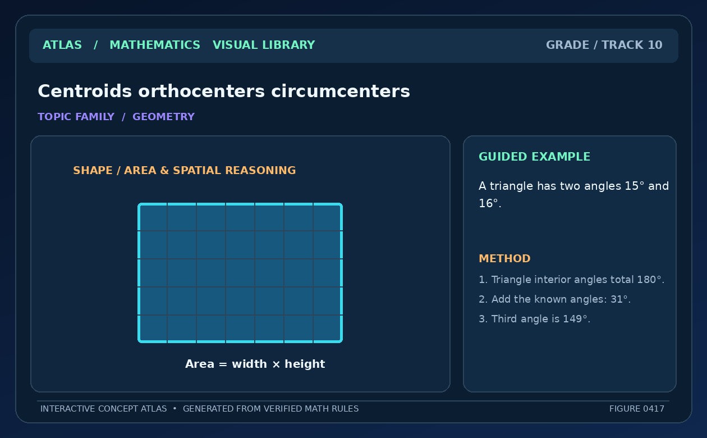
A triangle has two angles 15° and 16°.
- Triangle interior angles total 180°.
- Add the known angles: 31°.
- Third angle is 149°.
A triangle has angles 10° and 12°. Find the third.
Hint: Interior triangle angles sum to 180 degrees.
Show answer and verify
158
Check the units, inputs and intermediate steps. Different solution methods may be valid.
Triangle inequalities
Triangle inequalities: Sketch and label known lengths, angles and shape properties before calculating. A valid geometric argument uses definitions and established properties.
A triangle has two angles 9° and 36°.
- Triangle interior angles total 180°.
- Add the known angles: 45°.
- Third angle is 135°.
A triangle has angles 6° and 27°. Find the third.
Hint: Interior triangle angles sum to 180 degrees.
Show answer and verify
147
Check the units, inputs and intermediate steps. Different solution methods may be valid.
Quadrilateral classifications
Quadrilateral classifications: Sketch and label known lengths, angles and shape properties before calculating. A valid geometric argument uses definitions and established properties.
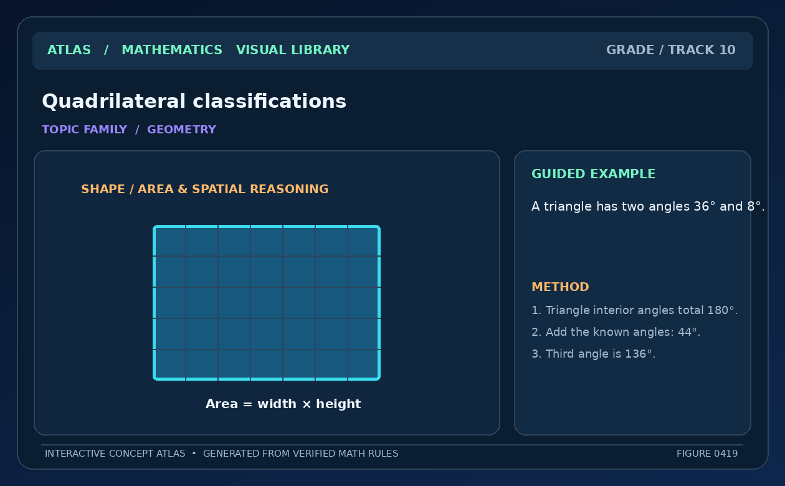
A triangle has two angles 36° and 8°.
- Triangle interior angles total 180°.
- Add the known angles: 44°.
- Third angle is 136°.
A triangle has angles 24° and 6°. Find the third.
Hint: Interior triangle angles sum to 180 degrees.
Show answer and verify
150
Check the units, inputs and intermediate steps. Different solution methods may be valid.
Parallelogram properties
Parallelogram properties: Sketch and label known lengths, angles and shape properties before calculating. A valid geometric argument uses definitions and established properties.
A triangle has two angles 9° and 44°.
- Triangle interior angles total 180°.
- Add the known angles: 53°.
- Third angle is 127°.
A triangle has angles 6° and 33°. Find the third.
Hint: Interior triangle angles sum to 180 degrees.
Show answer and verify
141
Check the units, inputs and intermediate steps. Different solution methods may be valid.
Rectangle properties
Rectangle properties: Sketch and label known lengths, angles and shape properties before calculating. A valid geometric argument uses definitions and established properties.
A triangle has two angles 30° and 32°.
- Triangle interior angles total 180°.
- Add the known angles: 62°.
- Third angle is 118°.
A triangle has angles 20° and 24°. Find the third.
Hint: Interior triangle angles sum to 180 degrees.
Show answer and verify
136
Check the units, inputs and intermediate steps. Different solution methods may be valid.
Rhombus properties
Rhombus properties: Sketch and label known lengths, angles and shape properties before calculating. A valid geometric argument uses definitions and established properties.
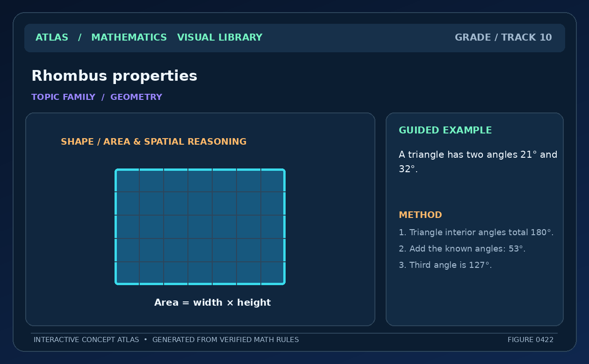
A triangle has two angles 21° and 32°.
- Triangle interior angles total 180°.
- Add the known angles: 53°.
- Third angle is 127°.
A triangle has angles 14° and 24°. Find the third.
Hint: Interior triangle angles sum to 180 degrees.
Show answer and verify
142
Check the units, inputs and intermediate steps. Different solution methods may be valid.
Square properties
Square properties: Sketch and label known lengths, angles and shape properties before calculating. A valid geometric argument uses definitions and established properties.
A triangle has two angles 24° and 24°.
- Triangle interior angles total 180°.
- Add the known angles: 48°.
- Third angle is 132°.
A triangle has angles 16° and 18°. Find the third.
Hint: Interior triangle angles sum to 180 degrees.
Show answer and verify
146
Check the units, inputs and intermediate steps. Different solution methods may be valid.
Trapezoid properties
Trapezoid properties: Sketch and label known lengths, angles and shape properties before calculating. A valid geometric argument uses definitions and established properties.
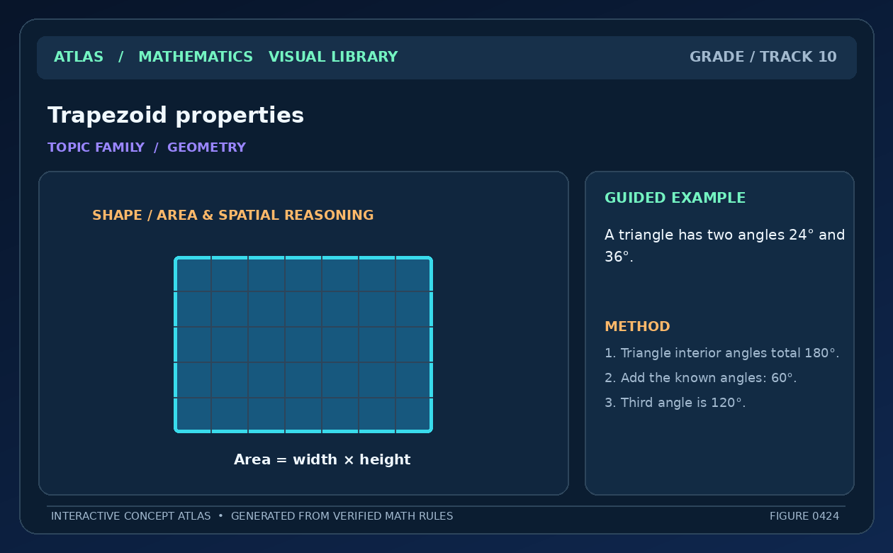
A triangle has two angles 24° and 36°.
- Triangle interior angles total 180°.
- Add the known angles: 60°.
- Third angle is 120°.
A triangle has angles 16° and 27°. Find the third.
Hint: Interior triangle angles sum to 180 degrees.
Show answer and verify
137
Check the units, inputs and intermediate steps. Different solution methods may be valid.
Circle chord theorems
Circle chord theorems: Sketch and label known lengths, angles and shape properties before calculating. A valid geometric argument uses definitions and established properties.
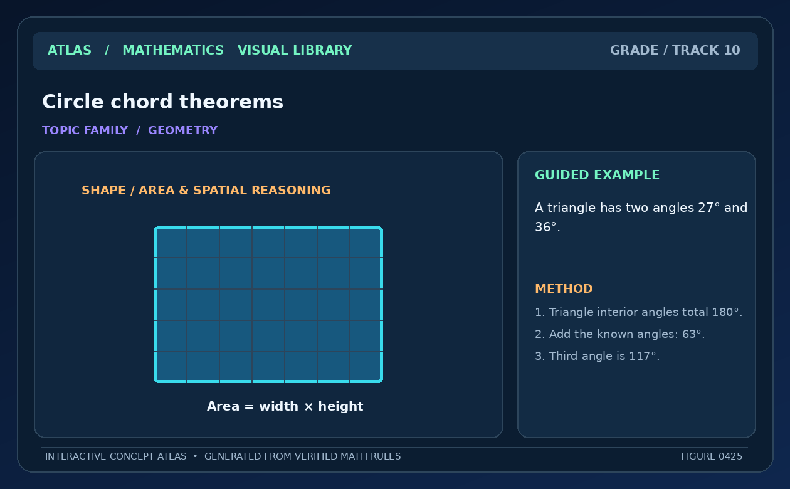
A triangle has two angles 27° and 36°.
- Triangle interior angles total 180°.
- Add the known angles: 63°.
- Third angle is 117°.
A triangle has angles 18° and 27°. Find the third.
Hint: Interior triangle angles sum to 180 degrees.
Show answer and verify
135
Check the units, inputs and intermediate steps. Different solution methods may be valid.
Inscribed angles
Inscribed angles: Sketch and label known lengths, angles and shape properties before calculating. A valid geometric argument uses definitions and established properties.
A triangle has two angles 21° and 36°.
- Triangle interior angles total 180°.
- Add the known angles: 57°.
- Third angle is 123°.
A triangle has angles 14° and 27°. Find the third.
Hint: Interior triangle angles sum to 180 degrees.
Show answer and verify
139
Check the units, inputs and intermediate steps. Different solution methods may be valid.
Central angles
Central angles: Sketch and label known lengths, angles and shape properties before calculating. A valid geometric argument uses definitions and established properties.
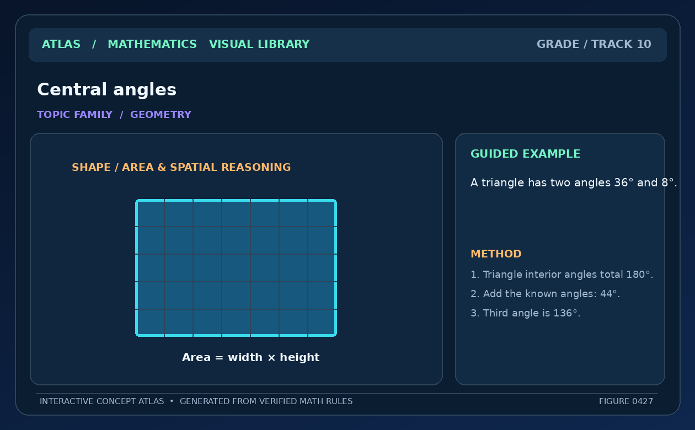
A triangle has two angles 36° and 8°.
- Triangle interior angles total 180°.
- Add the known angles: 44°.
- Third angle is 136°.
A triangle has angles 24° and 6°. Find the third.
Hint: Interior triangle angles sum to 180 degrees.
Show answer and verify
150
Check the units, inputs and intermediate steps. Different solution methods may be valid.
Tangents and secants
Tangents and secants: Sketch and label known lengths, angles and shape properties before calculating. A valid geometric argument uses definitions and established properties.
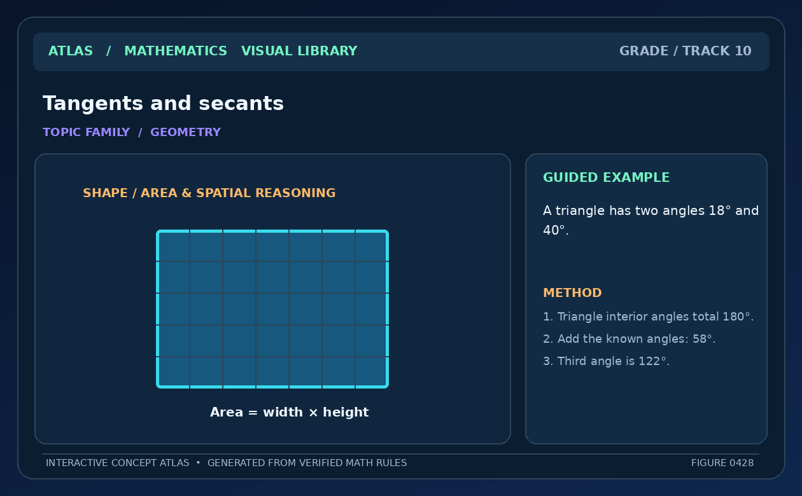
A triangle has two angles 18° and 40°.
- Triangle interior angles total 180°.
- Add the known angles: 58°.
- Third angle is 122°.
A triangle has angles 12° and 30°. Find the third.
Hint: Interior triangle angles sum to 180 degrees.
Show answer and verify
138
Check the units, inputs and intermediate steps. Different solution methods may be valid.
Arc length of circles
Arc length of circles: Sketch and label known lengths, angles and shape properties before calculating. A valid geometric argument uses definitions and established properties.
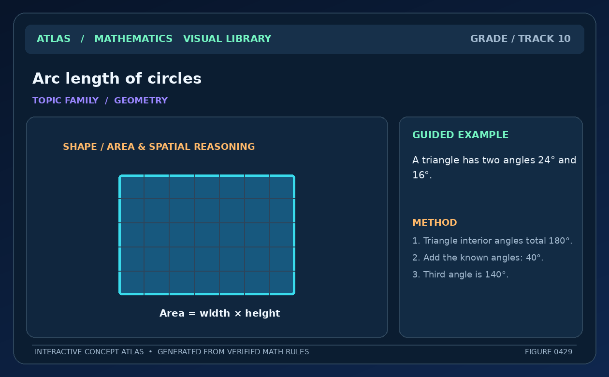
A triangle has two angles 24° and 16°.
- Triangle interior angles total 180°.
- Add the known angles: 40°.
- Third angle is 140°.
A triangle has angles 16° and 12°. Find the third.
Hint: Interior triangle angles sum to 180 degrees.
Show answer and verify
152
Check the units, inputs and intermediate steps. Different solution methods may be valid.
Sector areas
Sector areas: Sketch and label known lengths, angles and shape properties before calculating. A valid geometric argument uses definitions and established properties.
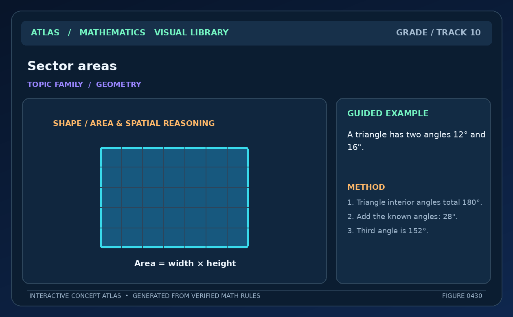
A triangle has two angles 12° and 16°.
- Triangle interior angles total 180°.
- Add the known angles: 28°.
- Third angle is 152°.
A triangle has angles 8° and 12°. Find the third.
Hint: Interior triangle angles sum to 180 degrees.
Show answer and verify
160
Check the units, inputs and intermediate steps. Different solution methods may be valid.
Polygon angle sums
Polygon angle sums: Sketch and label known lengths, angles and shape properties before calculating. A valid geometric argument uses definitions and established properties.
A triangle has two angles 12° and 12°.
- Triangle interior angles total 180°.
- Add the known angles: 24°.
- Third angle is 156°.
A triangle has angles 8° and 9°. Find the third.
Hint: Interior triangle angles sum to 180 degrees.
Show answer and verify
163
Check the units, inputs and intermediate steps. Different solution methods may be valid.
Regular polygons and apothems
Regular polygons and apothems: Sketch and label known lengths, angles and shape properties before calculating. A valid geometric argument uses definitions and established properties.
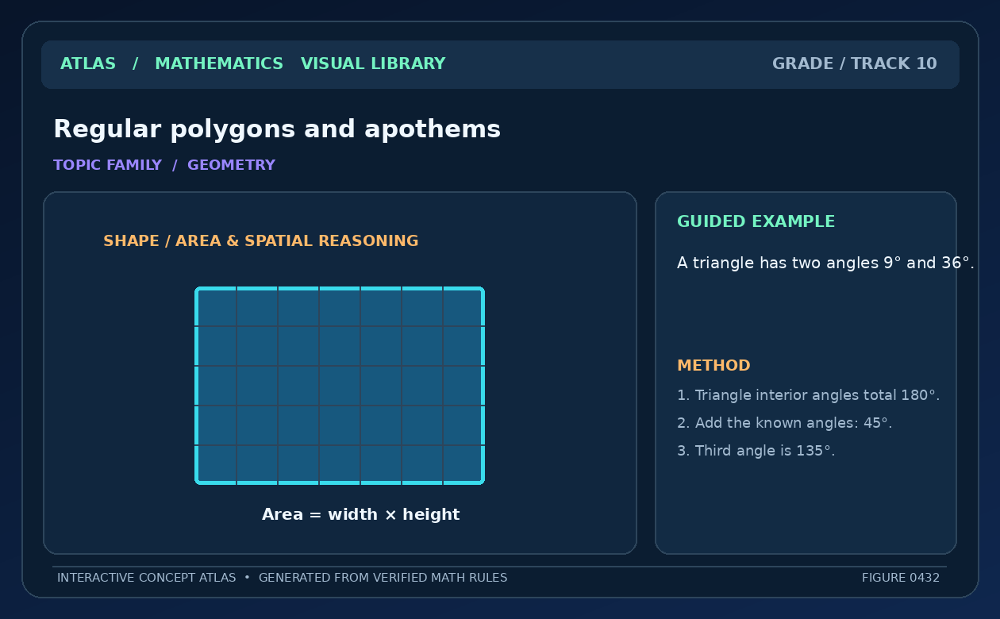
A triangle has two angles 9° and 36°.
- Triangle interior angles total 180°.
- Add the known angles: 45°.
- Third angle is 135°.
A triangle has angles 6° and 27°. Find the third.
Hint: Interior triangle angles sum to 180 degrees.
Show answer and verify
147
Check the units, inputs and intermediate steps. Different solution methods may be valid.
Reflections rotations and translations
Reflections rotations and translations: Sketch and label known lengths, angles and shape properties before calculating. A valid geometric argument uses definitions and established properties.
A triangle has two angles 18° and 44°.
- Triangle interior angles total 180°.
- Add the known angles: 62°.
- Third angle is 118°.
A triangle has angles 12° and 33°. Find the third.
Hint: Interior triangle angles sum to 180 degrees.
Show answer and verify
135
Check the units, inputs and intermediate steps. Different solution methods may be valid.
Dilations and similarity
Dilations and similarity: Sketch and label known lengths, angles and shape properties before calculating. A valid geometric argument uses definitions and established properties.
A triangle has two angles 12° and 28°.
- Triangle interior angles total 180°.
- Add the known angles: 40°.
- Third angle is 140°.
A triangle has angles 8° and 21°. Find the third.
Hint: Interior triangle angles sum to 180 degrees.
Show answer and verify
151
Check the units, inputs and intermediate steps. Different solution methods may be valid.
Coordinate geometry proofs
Coordinate geometry proofs: Sketch and label known lengths, angles and shape properties before calculating. A valid geometric argument uses definitions and established properties.
A triangle has two angles 27° and 32°.
- Triangle interior angles total 180°.
- Add the known angles: 59°.
- Third angle is 121°.
A triangle has angles 18° and 24°. Find the third.
Hint: Interior triangle angles sum to 180 degrees.
Show answer and verify
138
Check the units, inputs and intermediate steps. Different solution methods may be valid.
Volume of prisms
Volume of prisms: Sketch and label known lengths, angles and shape properties before calculating. A valid geometric argument uses definitions and established properties.
A triangle has two angles 18° and 40°.
- Triangle interior angles total 180°.
- Add the known angles: 58°.
- Third angle is 122°.
A triangle has angles 12° and 30°. Find the third.
Hint: Interior triangle angles sum to 180 degrees.
Show answer and verify
138
Check the units, inputs and intermediate steps. Different solution methods may be valid.
Volume of pyramids
Volume of pyramids: Sketch and label known lengths, angles and shape properties before calculating. A valid geometric argument uses definitions and established properties.
A triangle has two angles 18° and 20°.
- Triangle interior angles total 180°.
- Add the known angles: 38°.
- Third angle is 142°.
A triangle has angles 12° and 15°. Find the third.
Hint: Interior triangle angles sum to 180 degrees.
Show answer and verify
153
Check the units, inputs and intermediate steps. Different solution methods may be valid.
Volume of cones
Volume of cones: Sketch and label known lengths, angles and shape properties before calculating. A valid geometric argument uses definitions and established properties.
A triangle has two angles 9° and 28°.
- Triangle interior angles total 180°.
- Add the known angles: 37°.
- Third angle is 143°.
A triangle has angles 6° and 21°. Find the third.
Hint: Interior triangle angles sum to 180 degrees.
Show answer and verify
153
Check the units, inputs and intermediate steps. Different solution methods may be valid.
Volume of spheres
Volume of spheres: Sketch and label known lengths, angles and shape properties before calculating. A valid geometric argument uses definitions and established properties.
A triangle has two angles 27° and 12°.
- Triangle interior angles total 180°.
- Add the known angles: 39°.
- Third angle is 141°.
A triangle has angles 18° and 9°. Find the third.
Hint: Interior triangle angles sum to 180 degrees.
Show answer and verify
153
Check the units, inputs and intermediate steps. Different solution methods may be valid.
Surface areas of solids
Surface areas of solids: Sketch and label known lengths, angles and shape properties before calculating. A valid geometric argument uses definitions and established properties.
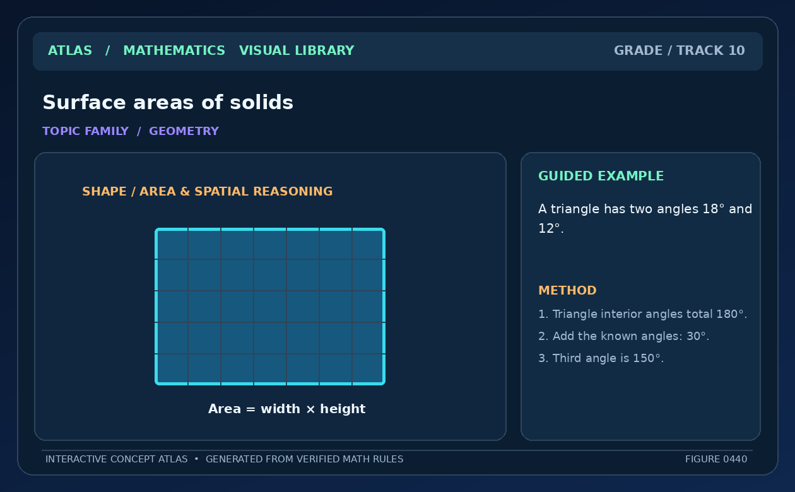
A triangle has two angles 18° and 12°.
- Triangle interior angles total 180°.
- Add the known angles: 30°.
- Third angle is 150°.
A triangle has angles 12° and 9°. Find the third.
Hint: Interior triangle angles sum to 180 degrees.
Show answer and verify
159
Check the units, inputs and intermediate steps. Different solution methods may be valid.
Right-triangle similarity
Right-triangle similarity: For a right triangle, the squares of the legs add to the hypotenuse square. The Pythagorean theorem applies only to right triangles.
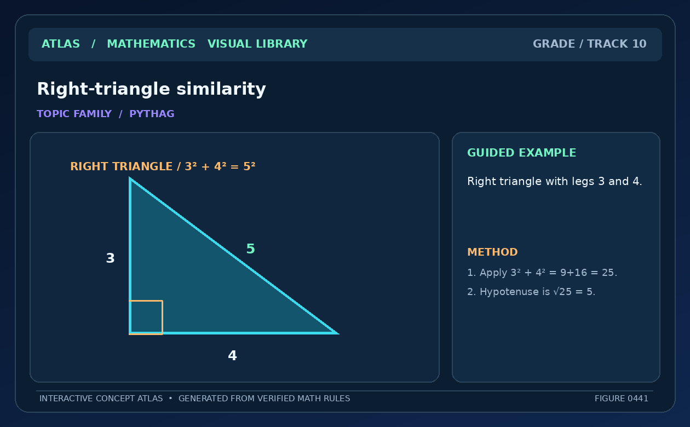
Right triangle with legs 3 and 4.
- Apply 3² + 4² = 9+16 = 25.
- Hypotenuse is √25 = 5.
Right triangle legs 21 and 28. Hypotenuse?
Hint: Scale the 3–4–5 right triangle.
Show answer and verify
35
Check the units, inputs and intermediate steps. Different solution methods may be valid.
Geometric proof of the Pythagorean theorem
Geometric proof of the Pythagorean theorem: For a right triangle, the squares of the legs add to the hypotenuse square. The Pythagorean theorem applies only to right triangles.
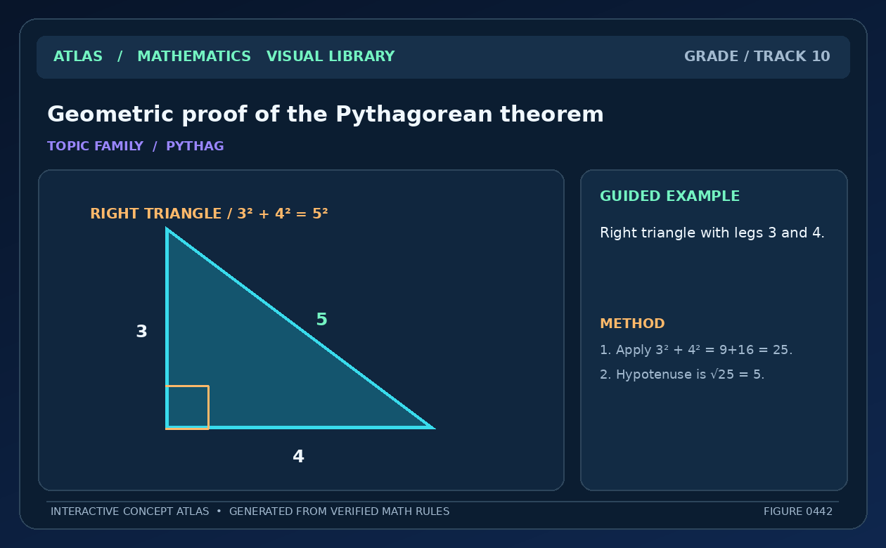
Right triangle with legs 3 and 4.
- Apply 3² + 4² = 9+16 = 25.
- Hypotenuse is √25 = 5.
Right triangle legs 9 and 12. Hypotenuse?
Hint: Scale the 3–4–5 right triangle.
Show answer and verify
15
Check the units, inputs and intermediate steps. Different solution methods may be valid.
Special right triangles 45-45-90
Special right triangles 45-45-90: For a right triangle, the squares of the legs add to the hypotenuse square. The Pythagorean theorem applies only to right triangles.
Right triangle with legs 3 and 4.
- Apply 3² + 4² = 9+16 = 25.
- Hypotenuse is √25 = 5.
Right triangle legs 18 and 24. Hypotenuse?
Hint: Scale the 3–4–5 right triangle.
Show answer and verify
30
Check the units, inputs and intermediate steps. Different solution methods may be valid.
Special right triangles 30-60-90
Special right triangles 30-60-90: For a right triangle, the squares of the legs add to the hypotenuse square. The Pythagorean theorem applies only to right triangles.
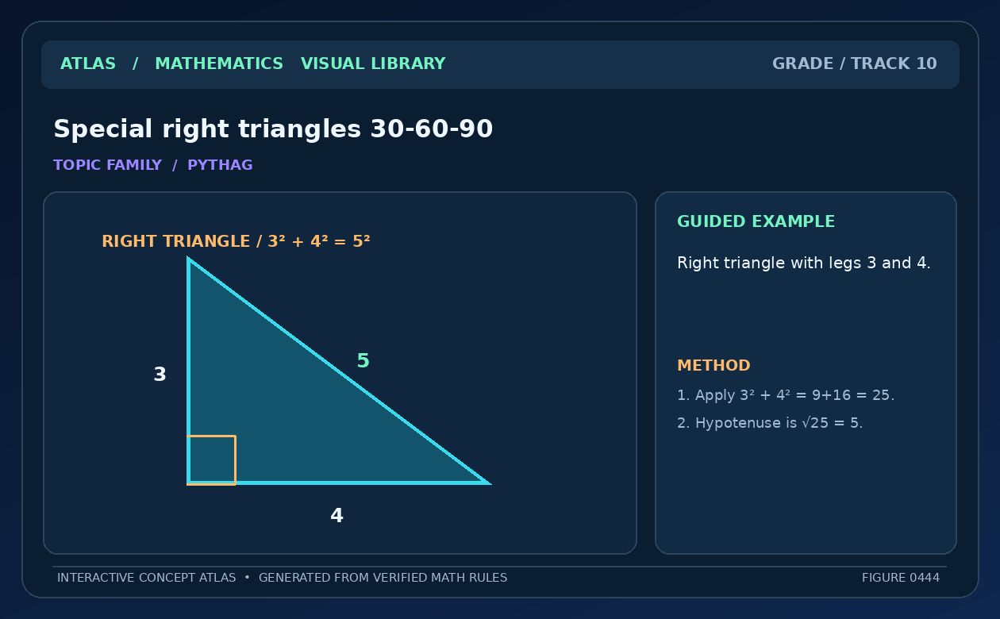
Right triangle with legs 3 and 4.
- Apply 3² + 4² = 9+16 = 25.
- Hypotenuse is √25 = 5.
Right triangle legs 18 and 24. Hypotenuse?
Hint: Scale the 3–4–5 right triangle.
Show answer and verify
30
Check the units, inputs and intermediate steps. Different solution methods may be valid.
Geometric distance problems
Geometric distance problems: For a right triangle, the squares of the legs add to the hypotenuse square. The Pythagorean theorem applies only to right triangles.
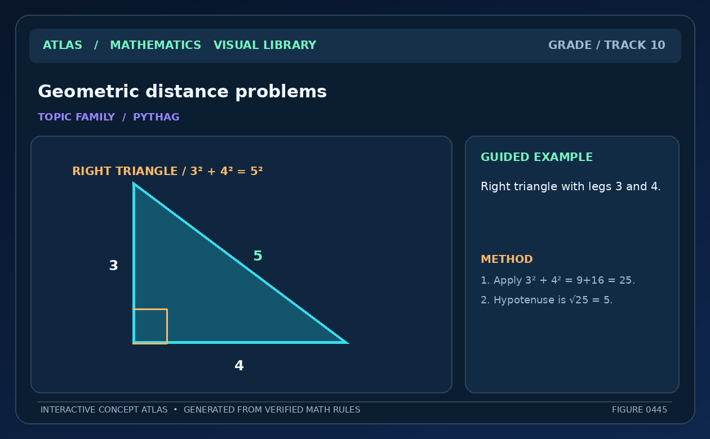
Right triangle with legs 3 and 4.
- Apply 3² + 4² = 9+16 = 25.
- Hypotenuse is √25 = 5.
Right triangle legs 6 and 8. Hypotenuse?
Hint: Scale the 3–4–5 right triangle.
Show answer and verify
10
Check the units, inputs and intermediate steps. Different solution methods may be valid.
Right-triangle sine cosine and tangent
Right-triangle sine cosine and tangent: Use the unit circle and angle identities to connect sine and cosine. In calculus, trigonometric derivatives use radians.
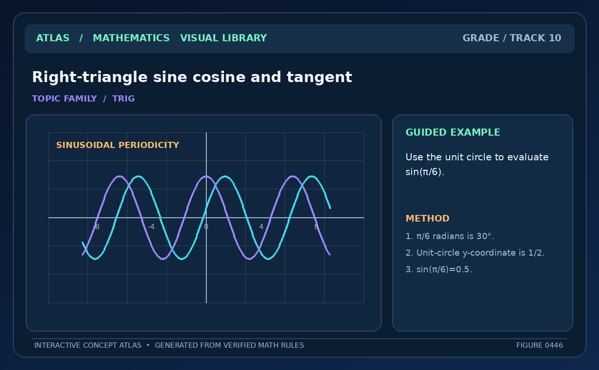
Use the unit circle to evaluate sin(π/6).
- π/6 radians is 30°.
- Unit-circle y-coordinate is 1/2.
- sin(π/6)=0.5.
What is sin(π/2)?
Hint: At 90° on the unit circle the y-coordinate is 1.
Show answer and verify
1
Check the units, inputs and intermediate steps. Different solution methods may be valid.
Inverse trigonometric ratios
Inverse trigonometric ratios: Use the unit circle and angle identities to connect sine and cosine. In calculus, trigonometric derivatives use radians.
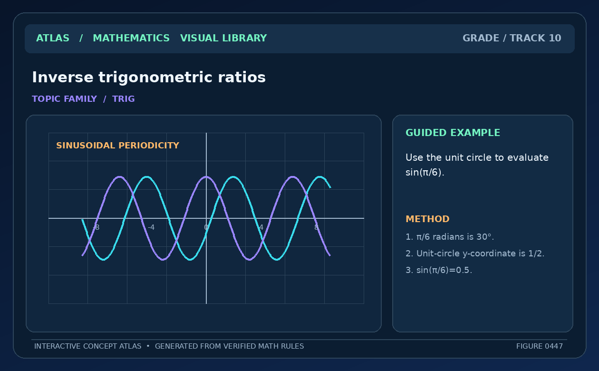
Use the unit circle to evaluate sin(π/6).
- π/6 radians is 30°.
- Unit-circle y-coordinate is 1/2.
- sin(π/6)=0.5.
What is sin(π/2)?
Hint: At 90° on the unit circle the y-coordinate is 1.
Show answer and verify
1
Check the units, inputs and intermediate steps. Different solution methods may be valid.
Heights and distances with trig
Heights and distances with trig: Use the unit circle and angle identities to connect sine and cosine. In calculus, trigonometric derivatives use radians.
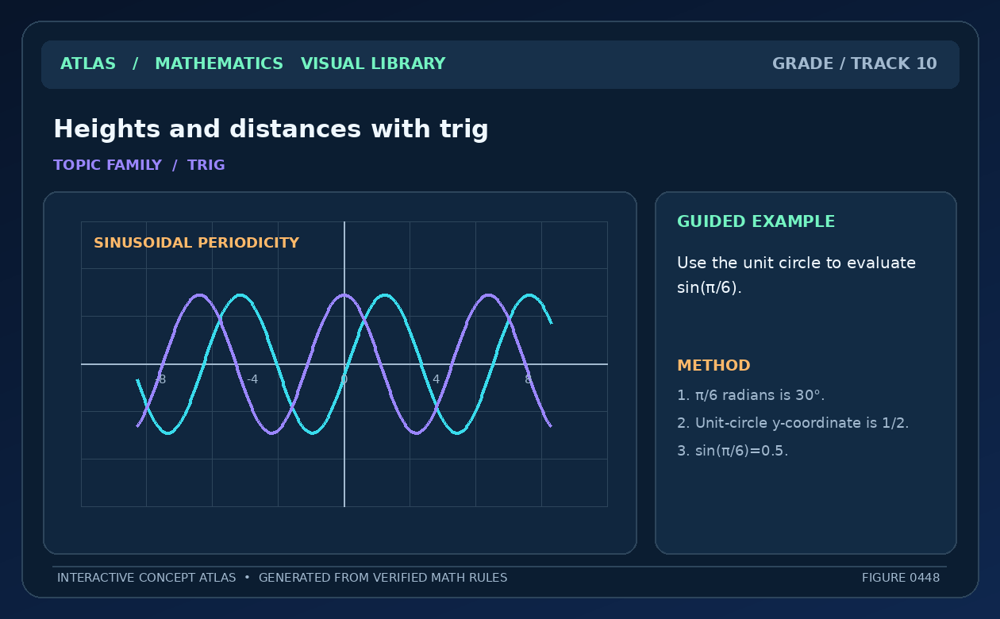
Use the unit circle to evaluate sin(π/6).
- π/6 radians is 30°.
- Unit-circle y-coordinate is 1/2.
- sin(π/6)=0.5.
What is sin(π/2)?
Hint: At 90° on the unit circle the y-coordinate is 1.
Show answer and verify
1
Check the units, inputs and intermediate steps. Different solution methods may be valid.
Composite shape area
Composite shape area: Decompose complicated regions into simpler shapes with known area formulas. Square units measure area; preserve the correct dimensions.
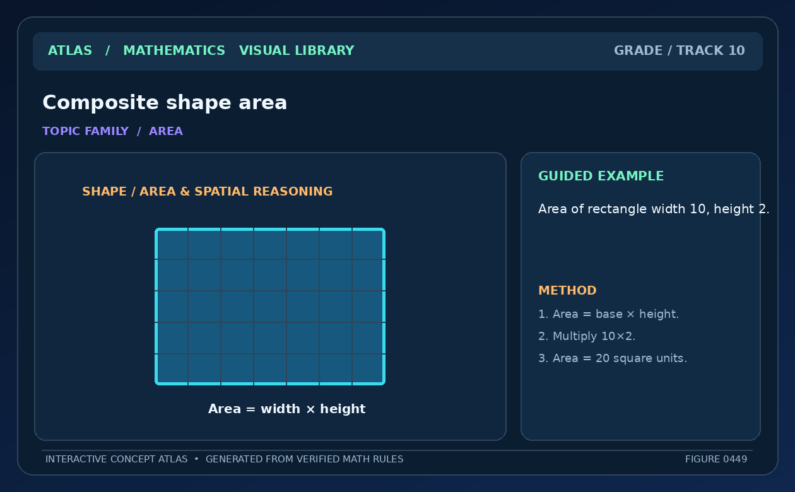
Area of rectangle width 10, height 2.
- Area = base × height.
- Multiply 10×2.
- Area = 20 square units.
Area of a rectangle 15 by 7?
Hint: Multiply both dimensions; use square units.
Show answer and verify
105
Check the units, inputs and intermediate steps. Different solution methods may be valid.
Triangle and parallelogram area
Triangle and parallelogram area: Decompose complicated regions into simpler shapes with known area formulas. Square units measure area; preserve the correct dimensions.
Area of rectangle width 7, height 11.
- Area = base × height.
- Multiply 7×11.
- Area = 77 square units.
Area of a rectangle 12 by 16?
Hint: Multiply both dimensions; use square units.
Show answer and verify
192
Check the units, inputs and intermediate steps. Different solution methods may be valid.
Heron formula introduction
Heron formula introduction: Decompose complicated regions into simpler shapes with known area formulas. Square units measure area; preserve the correct dimensions.
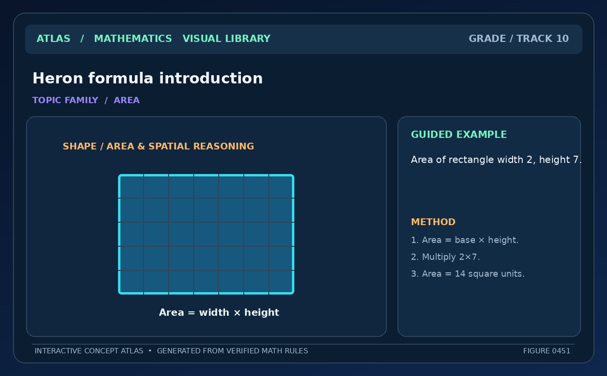
Area of rectangle width 2, height 7.
- Area = base × height.
- Multiply 2×7.
- Area = 14 square units.
Area of a rectangle 4 by 9?
Hint: Multiply both dimensions; use square units.
Show answer and verify
36
Check the units, inputs and intermediate steps. Different solution methods may be valid.